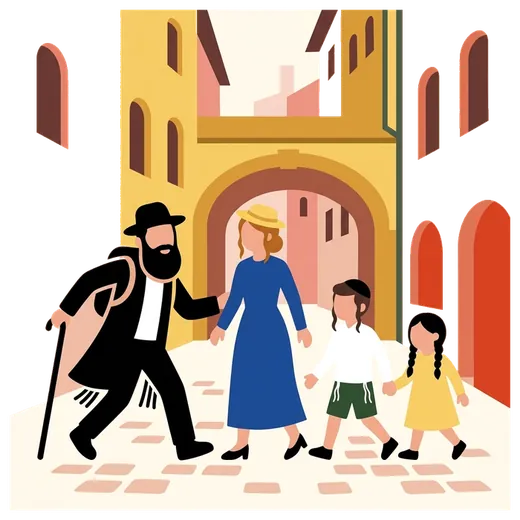

Guided tour of Jewish Lyon
A Jewish guide leads the visit in English, French or Spanish, with the inside of the Grande Synagogue. Sunday to Friday midday.
See the detailsBook on WhatsApp mishpacha tours
mishpacha tours
Home / Jewish Lyon guide / Things to do in Lyon
Give Lyon two or three days: Vieux Lyon and its traboules first, the Parc de la Tête d’Or with children next, a museum for the rainy afternoon. Fourteen places below, each with the time it takes, whether it suits children, where kosher food is nearby and how it fits Shabbat. The Grande Synagogue is the one visit where we take you inside a building that is closed to the public.

Each place shows time, children, kosher nearby and when it is closed; the rest is under Read more. We do not guide on Shabbat, so every plan runs Sunday to Friday. Hours were read on each venue’s website on 21 October 2026.
 Old Lyon and its hills
Old Lyon and its hills Vieux Lyon: a walk through the traboules. A UNESCO-listed Renaissance quarter between the Saône and the hill.
Vieux Lyon: a walk through the traboules. A UNESCO-listed Renaissance quarter between the Saône and the hill.A Renaissance quarter between the Saône and the hill, listed by UNESCO in 1998. Walk rue Saint-Jean and rue du Bœuf, then rue Juiverie, the street that kept the name of the medieval Jewish community. Traboules are covered passages that cut through the buildings from one street to the next. Some stay open in the daytime; a closed door belongs to the residents, so leave it.
Time: 2 to 3 hours. Children: yes, the passages are a game for them; the cobbles are hard on strollers. Kosher: restaurants of the Presqu’île and the 2nd arrondissement, 10 minutes on foot. See Kosher in Lyon. Shabbat: the streets are always open; we guide Sunday to Friday.
 Fourvière: two thousand years of Roman history. The Roman theatres of Lugdunum, capital of the Gauls, stand on the hill above Vieux Lyon.
Fourvière: two thousand years of Roman history. The Roman theatres of Lugdunum, capital of the Gauls, stand on the hill above Vieux Lyon.The Roman theatres sit on the hill above Vieux Lyon, on the site of Lugdunum, the capital of the Gauls. The Grand Théâtre dates from about 15 BC and the open-air site is free to enter. Take the F2 funicular from Vieux Lyon to the Minimes-Théâtres romains station. The Lugdunum museum next door is open Tuesday to Sunday.
Time: 1 to 2 hours. Children: yes, they climb the tiers; the hill is steep, so take the funicular. Kosher: none on the hill; eat in the 2nd arrondissement before you climb. See Kosher in Lyon. Shabbat: free access every day, 7:00 to 21:00 from 15 April to 15 September and to 19:00 the rest of the year; we guide Sunday to Friday.
 Croix-Rousse: a walk up to the silk weavers’ wall. The silk weavers’ hill and its 1,200 m² painted wall, the Mur des Canuts.
Croix-Rousse: a walk up to the silk weavers’ wall. The silk weavers’ hill and its 1,200 m² painted wall, the Mur des Canuts.The hill of the canuts, the silk weavers. The Mur des Canuts, on boulevard des Canuts, is a trompe-l’œil painted over 1,200 m² that shows the neighbourhood as it lived. Take metro line C to Croix-Rousse instead of climbing the slopes. Rue Sainte-Catherine, where our Jewish Lyon tour ends, runs down the same hill.
Time: 1 to 2 hours. Children: yes, with the metro for the climb. Kosher: down the hill, on the Presqu’île. See Kosher in Lyon. Shabbat: the wall is outdoors and always visible; we guide Sunday to Friday.
 Parc de la Tête d’Or: a lake, a free zoo, rose gardens. Lyon’s best place for children: 105 free hectares, a free zoo, rose gardens and boats on the lake.
Parc de la Tête d’Or: a lake, a free zoo, rose gardens. Lyon’s best place for children: 105 free hectares, a free zoo, rose gardens and boats on the lake.The best place in Lyon for children. The park covers 105 hectares and is free. The zoo is free too, as are the three rose gardens and the botanical garden. Boats and pedal boats go out on the lake when the weather allows.
Time: 3 hours or half a day. Children: yes, the first choice. Kosher: the 6th arrondissement borders the park. See Kosher in Lyon. Shabbat: the park is open every day, 6:30 to 20:30 (to 22:30 from 15 April to 14 October). The zoo opens 9:30 to 17:00 (17:45 in summer) and closes on Tuesday, so plan another day.
Presqu’île and Place Bellecour: a walk between two rivers. The peninsula between the Rhône and the Saône, from the vast Place Bellecour to place des Terreaux along rue de la République.The peninsula between the Rhône and the Saône. Place Bellecour, one of the largest open squares in Europe, has Louis XIV on horseback at its centre. Walk north along rue de la République to place des Terreaux and the town hall.
Time: 2 hours. Children: yes, there is room to run. Kosher: the restaurants of the 2nd arrondissement are a few minutes away. See Kosher in Lyon. Shabbat: the square is always open; most shops close on Sunday, so Sunday suits squares and quays better than shopping.
Fresque des Lyonnais: thirty figures of local history. An 800 m² painted wall with about thirty figures from Lyon’s history, from the Lumière brothers to Saint-Exupéry.A painted wall of about 800 m² on the quai de la Pêcherie, at the corner of rue de la Martinière, with around thirty people from two thousand years of Lyon’s history, from the Lumière brothers to Antoine de Saint-Exupéry. Children play spot the person.
Time: 20 minutes. Children: yes. Kosher: the Presqu’île, near Vieux Lyon. See Kosher in Lyon. Shabbat: outdoors and always open; we guide Sunday to Friday.
 The quays: an hour by bike along two rivers. Riverside paths away from traffic along both rivers, with Vélo’v self-service bikes.
The quays: an hour by bike along two rivers. Riverside paths away from traffic along both rivers, with Vélo’v self-service bikes.Both rivers have riverside paths away from the traffic. The Rhône banks are wide, with lawns and flat paths; the Saône quays are quieter and face Vieux Lyon. Vélo’v self-service bikes stand in stations along both. Walk instead if you prefer.
Time: 1 to 2 hours. Children: yes, the Rhône banks are flat and away from cars. Kosher: both banks reach the Presqu’île. See Kosher in Lyon. Shabbat: the paths are always open; we do not ride on Shabbat, a walk on the banks suits Friday afternoon.
 Part-Dieu: the shopping centre. Lyon’s main shopping centre, for everything you forgot to pack.
Part-Dieu: the shopping centre. Lyon’s main shopping centre, for everything you forgot to pack.Lyon’s main shopping centre, around the station in the 3rd arrondissement: clothes, shoes, chargers and everything you forgot. Shops open Monday to Saturday from 9:30 to 20:00, and on some Sundays. A certified kosher grocery for Shabbat shopping lies in the same arrondissement.
Time: 1 to 2 hours. Children: yes, it is a mall. Kosher: order your Shabbat food before Thursday. See Kosher in Lyon. Shabbat: shops open on Saturday; we shop Sunday to Friday.
Confluences museum: science and societies. A glass and steel museum of natural sciences and human societies, where the Rhône and the Saône meet.A glass and steel building at the southern tip of the Presqu’île, where the Rhône and the Saône meet, at 86 quai Perrache. Natural sciences and human societies, with temporary exhibitions.
Time: 2 to 3 hours. Children: yes; choose a few galleries rather than the whole museum. Kosher: eat in the 2nd arrondissement before or after; the museum is about 2.5 km south of Bellecour. See Kosher in Lyon. Shabbat: open Tuesday to Sunday, 10:30 to 18:30 (also Monday in zone A school holidays outside summer). We visit on Tuesday to Friday or Sunday.
 Institut Lumière: the family villa and the first film. The birthplace of cinema: the Lumière family villa and the factory site where one of the first films was shot in 1895.
Institut Lumière: the family villa and the first film. The birthplace of cinema: the Lumière family villa and the factory site where one of the first films was shot in 1895.The birthplace of cinema, at 25 rue du Premier-Film in the 8th arrondissement: the Lumière family villa and the site of the factory where the brothers shot one of the first films in 1895.
Time: 1.5 to 2 hours. Children: from about eight. Kosher: eat before you go, in the 3rd or the 6th arrondissement; metro line D reaches Monplaisir-Lumière. See Kosher in Lyon. Shabbat: open Tuesday to Sunday, 10:00 to 18:30. We visit on Tuesday to Friday or Sunday.
Musée des Beaux-Arts: a visit through 70 rooms. Art from antiquity to today in 70 rooms, with a sculpture garden, on place des Terreaux.Art from antiquity to today in 70 rooms and 7,000 m², at 20 place des Terreaux, with a sculpture garden.
Time: 2 hours. Children: from about ten, with a short route chosen in advance. Kosher: the Presqu’île, a few minutes away. See Kosher in Lyon. Shabbat: open Wednesday to Monday, 10:00 to 18:00 (10:30 on Friday), closed on Tuesday. We visit on any other day, Sunday to Friday.
Jewish Lyon and memory Grande Synagogue: the building we take you inside. Inaugurated in 1864 and closed to the public, it is the one building we take you inside, on our 2 h 30 Jewish Lyon tour, subject to opening hours and security.
Grande Synagogue: the building we take you inside. Inaugurated in 1864 and closed to the public, it is the one building we take you inside, on our 2 h 30 Jewish Lyon tour, subject to opening hours and security.Inaugurated in 1864 at 13 quai Tilsitt, it is still a working synagogue and is closed to visitors outside the Heritage Days. Mishpacha Tours holds the special authorisation and takes private groups inside on its 2 h 30 Jewish Lyon tour, subject to opening hours and security on the day. It is the one visit on this page that you cannot make alone. The Grande Synagogue, in detail.
Time: 2 h 30 with the tour. Children: from about eight. Kosher: the 2nd arrondissement, a short walk. See Kosher in Lyon. Shabbat: services are held, but visitors are not admitted; our visits run Sunday to Friday morning.
CHRD: the memory museum. The resistance and deportation museum, in the former Gestapo headquarters.The Centre d’histoire de la résistance et de la déportation, at 14 avenue Berthelot, in the former Gestapo headquarters of Lyon. Our private visit follows the Jewish thread of the occupation: the raids, the deportations, the children of Izieu. The CHRD, in detail.
Time: 2 h 30. Children: teenagers; for younger ones, talk to us first. Kosher: the 6th or the 2nd arrondissement, by metro. See Kosher in Lyon. Shabbat: open Wednesday to Sunday, 10:00 to 18:00, closed Monday and Tuesday. We visit on Wednesday to Friday or Sunday.
Izieu: a full-day visit. The memorial to the 44 Jewish children arrested on 6 April 1944, one hour from Lyon by road.The Maison d’Izieu is the memorial to the 44 Jewish children arrested on 6 April 1944, one hour from Lyon by road. We spend the day there with a van and driver. The main access bridge is closed for works until November 2026, with a signed detour. The Maison d’Izieu, in detail.
Time: a full day. Children: from about eight, the memorial’s minimum age. Kosher: bring your own kosher food; picnics are allowed in the orchard. Shabbat: the memorial opens on Saturday from April to August; we visit Sunday to Friday.
Twelve of the fourteen places; the quays run along both rivers and Izieu is one hour from Lyon. Tap a marker for directions.
A family with children: three days.
Day 1: Vieux Lyon, then the Fresque and Place Bellecour.
Day 2: Tête d’Or, with a boat on the lake (not on Tuesday).
Day 3: Lumière or Confluences (not on Monday), then the quays.
A couple: a slower walk, three days.
Day 1: Vieux Lyon and rue Juiverie, then the Roman site.
Day 2: Croix-Rousse and the Mur des Canuts, then the Beaux-Arts.
Day 3: Grande Synagogue and CHRD with our guide, Wednesday to Friday.
Passing through on the way to the Alps.
One day: our Stopover, three hours with the Grande Synagogue and a kosher lunch.
Two days: add Vieux Lyon and Tête d’Or.
Then a van to the Alps.
Two days cover Vieux Lyon, the Parc de la Tête d’Or and one museum. Three days add the Grande Synagogue and a Memory visit. Izieu takes a full day on top.
The Parc de la Tête d’Or with its zoo and rose gardens, the Roman site on Fourvière, the Mur des Canuts, the Fresque des Lyonnais, the quays and the traboules that stay open.
Parks, squares and quays are open every day, and the museums on this page open on Saturday. We guide Sunday to Friday.
Go to the CHRD, the Confluences, the Beaux-Arts or the Institut Lumière, or walk the covered traboules of Vieux Lyon. The Lyon weather page has the seven-day forecast and a plan for each kind of day.
One request, we organise everything, from the table to the transfer.
A Jewish guide leads the visit in English, French or Spanish, with the inside of the Grande Synagogue. Sunday to Friday midday.
See the detailsBook on WhatsApp
Shabbat meals, meals delivered to your hotel, a minyan close by.
See the detailsBook on WhatsApp
A chef in your apartment or your chalet, in a kitchen made kosher.
See the detailsBook on WhatsApp
Lyon airport, Geneva, the Alpine resorts. Never during Shabbat.
See the detailsBook on WhatsApp
A quiet presence beside your group, only when you ask for it.
See the detailsBook on WhatsApp